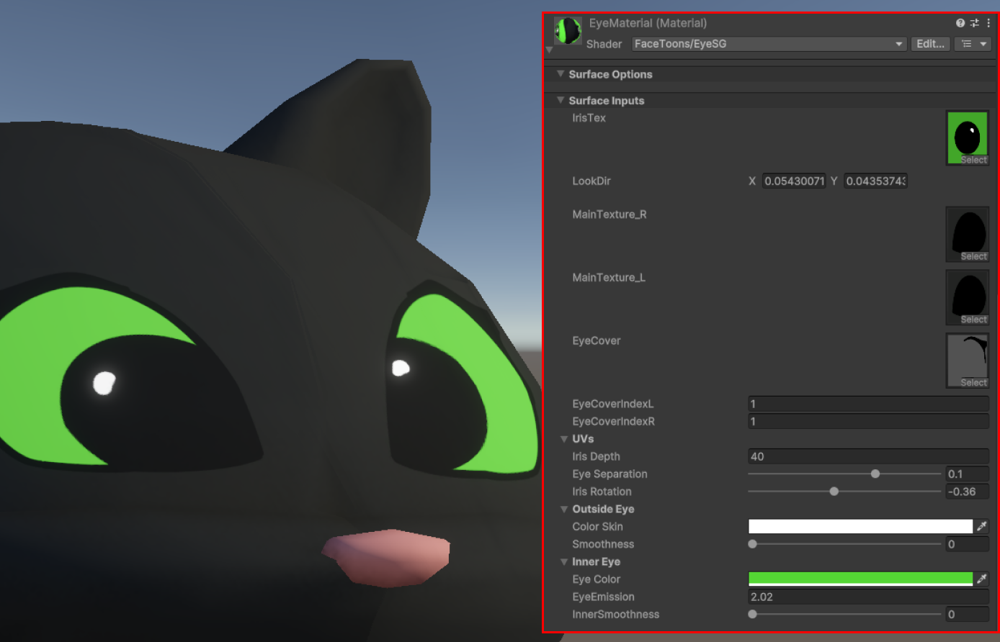
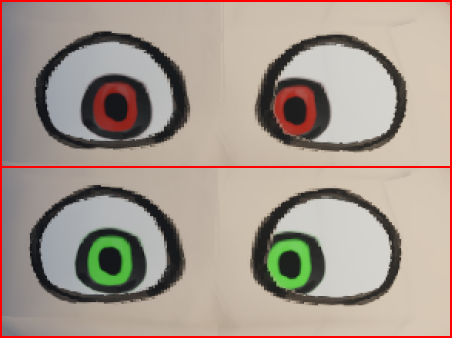

Eye Shader
The FaceToons Eye Shader is built in ShaderGraph to maximize compatibility across Unity render pipelines, versions, and platforms with minimal manual adjustment. Some components are organized into reusable sub-graphs, allowing for flexibility in your own custom shaders.

Platform Compatibility
This shader uses TextureArrays for efficient memory and bandwith management. As of Unity 6, TextureArrays are supported on all platforms with shader model 3.5 or higher, or the following graphics APIs:
- DirectX11 and DirectX12 (Windows)
- Metal (iOS, macOS)
- OpenGL Core (macOS, Linux)
- OpenGL ES 3.0 (Android, WebGL 2.0)
- Vulkan (Windows, Linux)
Exposed Settings
| Property | Showcase |
|---|---|
| IrisTex (_IrisTex) Texture for the iris. Assigned by EyeAnimator. |
|
| LookDir (_LookDir) XY offset for the iris texture in UV Space. This field is used by EyeAnimator to make the character look at a certain object. |
|
| MainTexure_R/MainTexture_L (_MainTexture_R, _MainTexture_L) Left and right textures for the eye emblem. Laid on top of inner eye (color+iris). Assigned by EyeAnimator. |
|
| EyeCover (_EyeCover) TextureArray with all poses for the EyeCover such as blinks. Assigned by EyeAnimator. |
|
| EyeCoverIndexL/EyeCoverIndexR (_EyeCoverIndexL, _EyeCoverIndexR) Integer of texture from EyeCover to show on this eye. Assigned by EyeAnimator. |
|
| Iris Depth (_IrisDepth) Adds a subtle 3D effect to the inner eye when viewed from angles. |
|
| Eye Separation (_EyeSeparation) Adds a crosseyed effect to the character by offseting the iris to be closer/further away on the x axis. Extra useful for silly characters or cute styles with large irises. |
|
| Iris Rotation (_IrisRotation) Rotates the iris texture by its center. Right eye is rotated clockwise and left counter-clockwise. Useful for some zany cartoony designs. |
|
| Eye Color (_EyeColor) Changes the background color behind the iris texture. Only visible in transparent parts of the iris. |
|
| Iris Tint (_IrisTint) Tints the iris texture. |
 |
| Eye Emission (_EyeEmission) Makes the eye (both irisTex and Background color) glow |